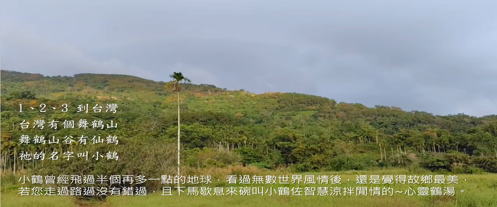
已連續得到「舞鶴」好運：0 天
🌱 今天是你的第一天，萬事舞鶴的開始！
小鶴帶路
載入中...
── 心靈鶴湯 ──
載入中，請稍候...
今日萬事 舞鶴✦
分享醍醐灌腦的～心靈鶴湯
今日幸運指數
❤️ 愛情
★★★★★
💰 財運
★★★★★
💼 工作
★★★★★
😊 心情
★★★★★
🌿 今日小行動
載入中...
我的收藏
舞鶴地圖
北回歸線標誌公園
台灣有三座北回歸線標誌塔分別位於：嘉義縣水上鄉（北回歸線太陽館）、花蓮縣瑞穗鄉（舞鶴便道/舞鶴台地），以及花蓮縣豐濱鄉（靜浦北迴歸線界標）；其中位於舞鶴台地（台9線省道旁）這一座始建於日治時期：最早於 1933 年（昭和8年）7月 建造，是全台第二座北回歸線標（第一座為嘉義水上鄉），1981 年（民國70年）因應東線鐵路拓寬工程，該標誌塔被拆遷至現今的舞鶴台地上，並重新建造為新式外觀呈現優美的白色八爪造型/白色日晷造型。
掃叭石柱是什麼？
馬立雲部落 Maibul 的故事
古伊之泉與碑
瑞穗牧場
香積園
聯絡我們
小鶴能量池
你好呀！今天想喝杯舞鶴的蜜香紅茶嗎？
🎁 今日尋寶 (今天還有 3 次機會)
🎁
🎁
🎁
🎒 寶物收集包
?
?
?
?
?
?
?
?
?
舞鶴好物
現貨熱銷
現有可訂購商品
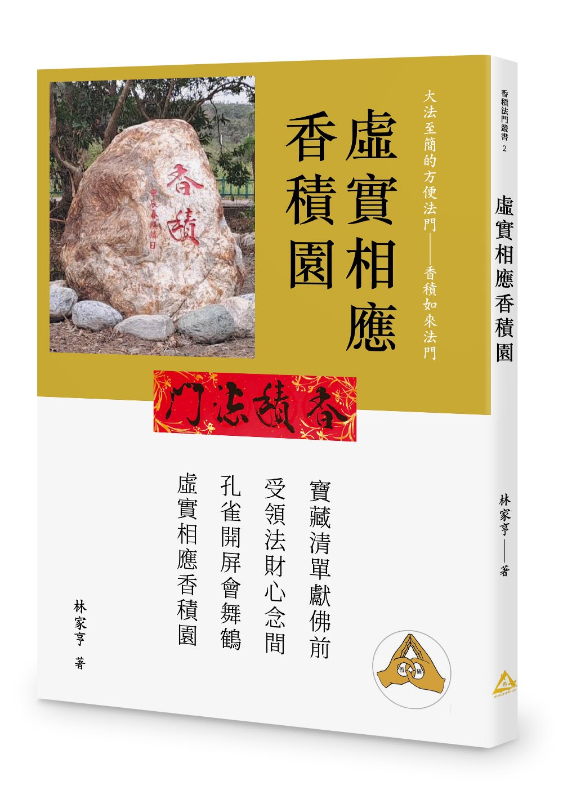
虛實相應香積園
香積園從無到有，在香積法門驗證虛實相應合一的故事，引領您體悟清靜的心靈空間。
原來我是 Milo Pazik（電子書）
撒奇萊雅族，在清朝幾乎被抄家滅族，相隔一個多世紀後才發現，原來我是 Milo Pazik，Sakizaya！部落尋根與自我認同的旅程故事。
快人快語揭天幕
作者在香積法門修持驗證大法至簡、大法必簡的方便法門，快語直言天地萬物的虛實存在。
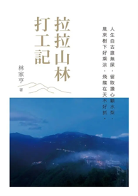
拉拉山林打工記
回憶記錄30年前，大學四年暑假在拉拉山打工的趣事，與深受啟發的山林生活體驗。
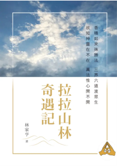
拉拉山林奇遇記
拉拉山林，也是作者的外號，以第一人稱的視角記錄分享親身經歷的不可思議的奇遇。
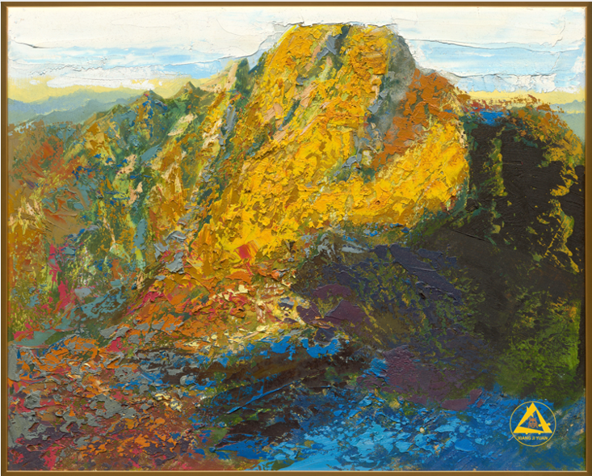
日照金山
台灣之最－玉山油畫 高解析度掃描專業輸出複製畫 尺寸：91.5 x 73.5 cm
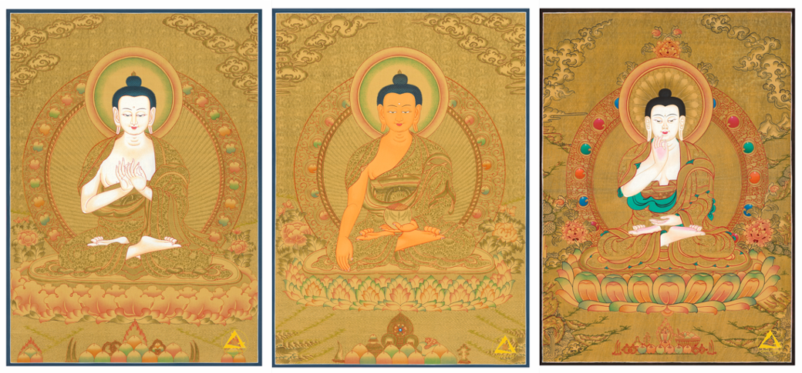
三世佛金唐
有段因緣俱足殊勝故事的三世佛金唐 高解析度掃描專業輸出複製，質感如真 尺寸：43.5 x 60 cm、39 x 54.5 cm
即將開放預購
即將開放預購商品
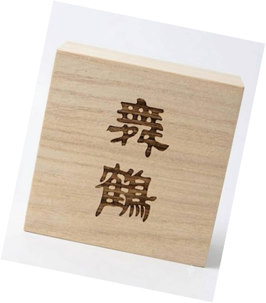
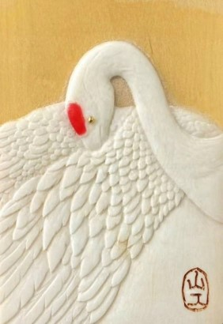
舞鶴木牌
36 x 52 x 8 mm 舞鶴木牌擴香掛飾 限量108件 黃楊木與駝鹿角完美組合 大陸天工獎微雕大師作品 附精緻天地蓋桐木收藏盒 ✽ 開放預購 ✽
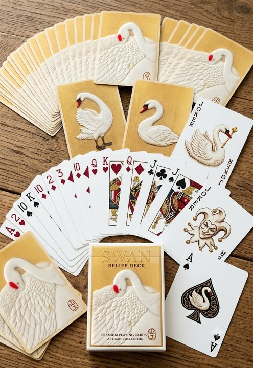
舞鶴撲克牌
即將開放預購
規劃中商品
規劃中商品
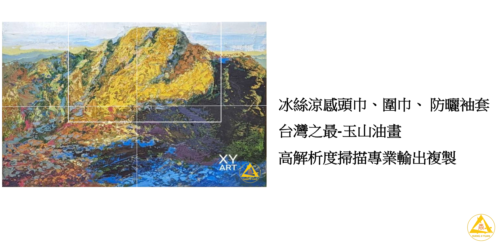
冰絲涼感頭巾、圍巾、防曬袖套
台灣之最－玉山油畫 高解析度掃描專業輸出複製
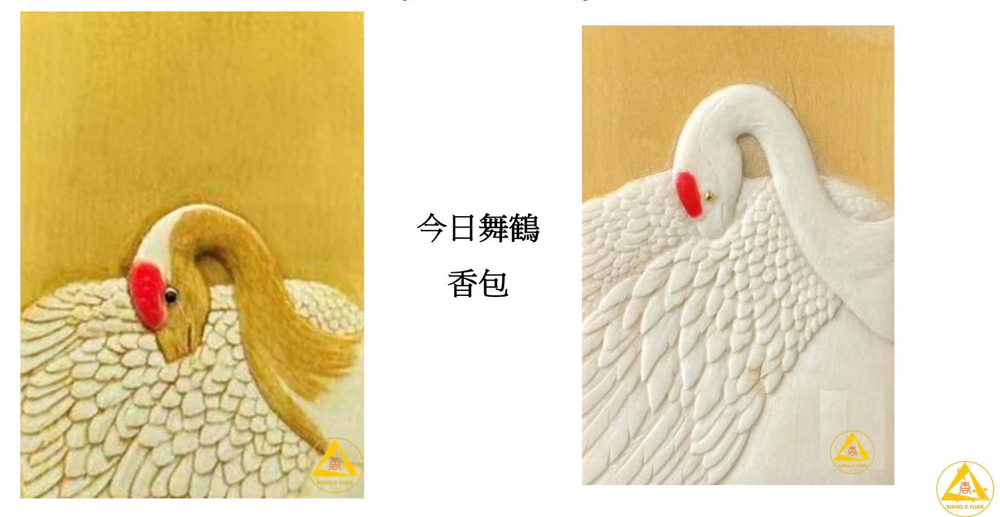
今日舞鶴 香包
聯絡我們
小鶴作文
聯絡小鶴
聯絡資訊
- Email： xjyltd@gmail.com
- 電話： 02-26971176 與 0955202660
- LINE/Wechat： lala3lin (請手動搜尋 ID 加入好友)
- 官網： https://xjy.webnode.page/
- Facebook： https://www.facebook.com/share/1VRShyqxmZ/
小鶴拼圖
《舞鶴》拼圖挑戰
目前進度：已解鎖 0/12 片
🧩 待放置碎片